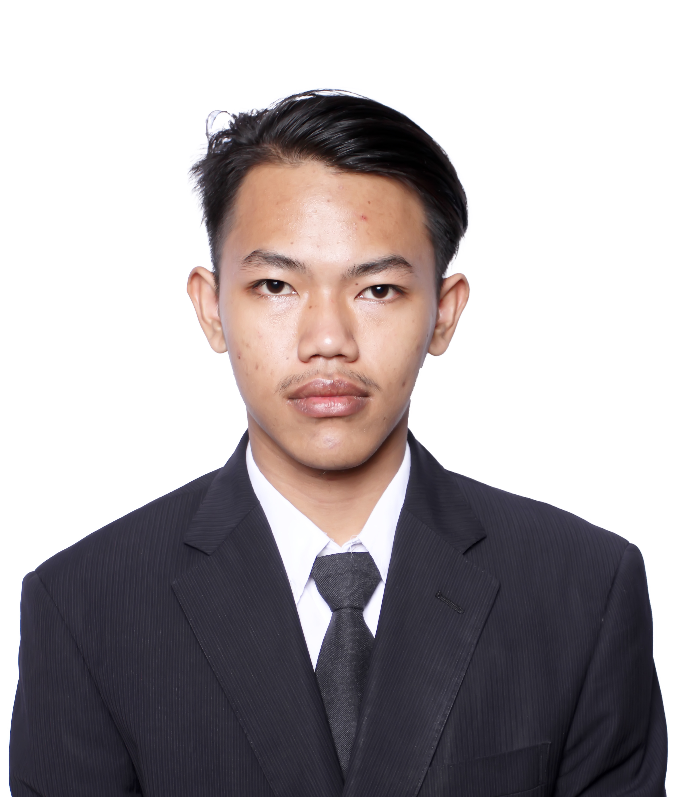

Ryan Hamid Muhammad, S.Tr.T
AI Engineering & Full-Stack Web Developer · Lulusan Sarjana Terapan Teknologi Rekayasa Internet (PENS)
Merancang sistem cerdas berbasis kecerdasan buatan, aplikasi web full-stack, serta integrasi perangkat IoT & RFID yang andal untuk kebutuhan industri maupun keamanan kendaraan terhubung (Internet of Vehicles).

Karya Rekayasa & Catatan Teknis
Deteksi Serangan Siber Berbasis AI untuk Keamanan IoV
Benchmark arsitektur MLP, 1D-CNN, DCNN, dan MetaIDS pada dataset keamanan lalu lintas kendaraan CAN-Bus.
Buka Studi Kasus → Web Full-Stack & RFIDSistem Pelacakan Gudang & Absensi Gerbang Nirkabel
Integrasi pembaca RFID dan otomasi gerbang nirkabel dengan backend PHP, JavaScript, dan PostgreSQL.
Buka Studi Kasus → Tulisan Blog TerbaruMerancang Deteksi Intrusi Kendaraan Terhubung (IoV)
Catatan teknis mengenai tantangan keamanan protokol CAN-Bus dan penerapan deep learning di perangkat edge.
Baca Artikel →